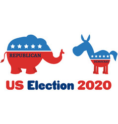
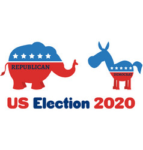
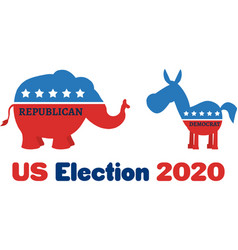

Lots of things happened in 2020, and two of the most influential matters are COVID and US Election 2020. Two major political parties in USA are Democrats and Republicans and each of them has its own view on mask wearing. Although it is known that mask wearing can efficiently decrease the chance of getting COVID, some politicians / individuals with certain policital standing are still unwilling to wear masks.
Soooo
Does Politics have influence on COVID situations in USA?

Read the notes first!
1. All of the graphs in are scatterplots. The red dots stand for Republican states and blue dots stand for democratic states.
2. The axis in each chart has a pretty good indication of the data dots, so the tooltip only provides the name of the State. (Providing all information within a small box would be visually uncomfortable and redundant)